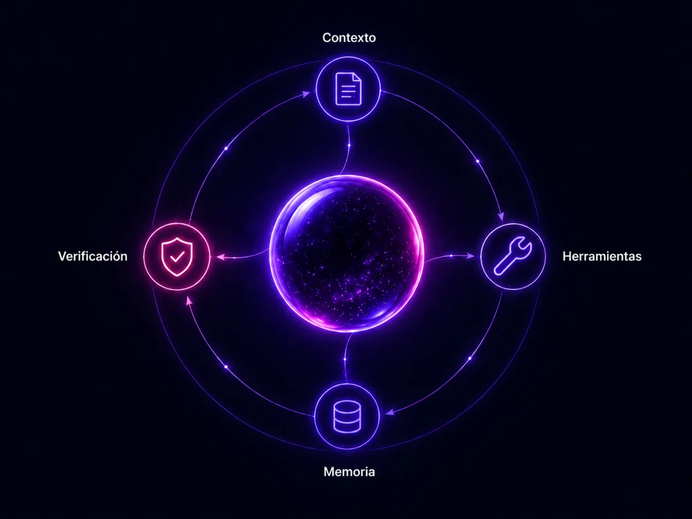

Las máquinas aprenden patrones. Los humanos rompemos los nuestros.
Somos un equipo que despliega infraestructura de IA especializada por sector. Entendemos los problemas de cada industria y construimos el arnés que hace que los agentes funcionen — de verdad, en producción, sin supervisión constante.

Entendemos tu sector. Construimos el arnés. Desplegamos los agentes.
Un agente de IA sin estructura es solo un modelo respondiendo preguntas. Lo que diferencia a un sistema que funciona en producción es el arnés: el entorno que rodea al modelo y le permite ejecutar tareas reales, de forma controlada, con memoria, con herramientas, y con verificación. Eso es lo que construimos — para cada sector, desde cero.

El agente sabe dónde está
Cada agente recibe información específica de tu operación — tus procesos, tus reglas, tu historial. No trabaja en el vacío. Trabaja en tu mundo.
El agente puede actuar
Conectamos el agente a las herramientas que ya usas — CRMs, bases de datos, canales de comunicación, APIs externas. No es un chat. Es un operador.
El agente recuerda
Los agentes de BubbleMesh tienen memoria externa que persiste entre sesiones. Aprenden de la operación, acumulan contexto y mejoran con el tiempo — sin depender de la ventana de un solo modelo.
El agente no alucina en producción
Cada output pasa por un sistema de verificación antes de salir al mundo. Tests, revisores y agentes de QA detectan errores antes de que lleguen al cliente. El arnés garantiza la solidez del sistema aunque el modelo cambie.
Construido sobre los mejores modelos. No atado a ninguno.
Usamos los proveedores líderes en cada capa del sistema. El arnés garantiza que si un modelo mejora o cambia, el sistema no se rompe — solo mejora.
Infraestructura que entiende tu sector desde adentro.
Especialización real, no IA genérica
Cada Bubble se construye entendiendo los problemas específicos de su industria. No aplicamos la misma solución a todo — aprendemos tu sector primero y después construimos el arnés que lo resuelve.
El arnés que garantiza el sistema
Los modelos de IA cambian constantemente. Lo que garantiza la solidez de tu infraestructura no es el modelo — es el arnés que lo rodea. BubbleMesh construye lo que dura, no lo que está de moda.
Tu operación no depende de nosotros
Construimos para que no nos necesites. Cada sistema que desplegamos está diseñado para operar autónomamente. Cuando nos retiramos, tu infraestructura sigue corriendo sola.
Los mejores modelos, sin atarte a ninguno
Usamos Claude, GPT-4o, Gemini y los modelos más potentes de cada líder. El arnés garantiza que puedes cambiar de modelo en el futuro sin reescribir el sistema.
Un arnés. Cada sector, su Bubble.
Cada Bubble es una infraestructura de IA construida específicamente para su industria. Su propio arnés, sus propias herramientas, su propio agente entrenado en el contexto del sector. No es la misma solución con otro nombre — es ingeniería desde adentro.
BubbleMesh Xperience
Agencia de marketing especializada en operadores de experiencias turísticas. Combina Community Managers humanos con agentes de IA que atienden turistas en inglés 24/7, gestionan reservas y producen contenido.
xperience.bubble-mesh.com →BubbleMesh Prop
Agentes de IA para la gestión de proyectos de construcción: seguimiento de avance, coordinación de subcontratistas, control de materiales y reportes automáticos a dirección.
PróximamenteBubbleMesh Security
Orquestación de agentes para empresas de seguridad privada: coordinación de operativos, reportes de incidentes, protocolos de respuesta y comunicación con clientes corporativos.
PróximamenteLo que probablemente estás pensando.
No. La automatización reemplaza pasos. Los agentes de BubbleMesh entienden contexto, toman decisiones dentro de límites definidos y aprenden de la operación. No automatizamos pasos — construimos sistemas que piensan dentro de su dominio.
Al contrario. Los agentes ejecutan lo que tu equipo no debería estar haciendo: responder el mismo mensaje por séptima vez, llenar una hoja de cálculo, confirmar una reserva a medianoche. Tu equipo recupera tiempo para el trabajo que ninguna máquina puede hacer.
Depende del diagnóstico. El proceso empieza siempre por entender el problema real — no por proponer soluciones. Una vez terminado el diagnóstico, el primer agente puede estar operativo en menos de dos semanas.
Tu contexto es tuyo. La inteligencia que construimos para tu organización opera sobre tu infraestructura. No hay datos de tu operación viviendo en servidores de terceros sin tu consentimiento explícito. La arquitectura es segura por diseño.
Cada sistema tiene un humano responsable que supervisa la operación. Los agentes no actúan sin límites definidos y sin aprobación del cliente. Si algo sale del rango esperado, el sistema escala a humano antes de actuar.

Líderes que quieren crecer sin perder el control
Tu empresa tiene tracción. Tu operación empieza a romperse porque crece más rápido que tu capacidad de documentarla. Necesitas sistemas de ejecución que corran solos y datos reales para decidir rápido.
Fundadores atrapados en su propia operación
Eres el cuello de botella de tu empresa. Cada decisión pasa por ti. Cada proceso depende de que estés presente. Necesitas agentes que operen sin tu intervención constante para poder hacer lo que solo tú puedes hacer.
Expertos que quieren proteger su tiempo creativo
Tu talento es lo que diferencia tu negocio. Tu tiempo lo consumen tareas comerciales y operativas. Necesitas automatización que proteja tu espacio creativo y haga el trabajo comercial por ti.
El equipo detrás de la metodología.
Somos cinco. Cada uno con un rol específico, ninguno intercambiable. TheFirstBubble es el piloto — el equipo que valida la metodología en el terreno antes de que BubbleMesh escale a las siguientes verticales.
Elías Oscar Rico Contreras
Arquitecto del ecosistema BubbleMesh. Consultor en metodologías ImpactX y Scaling Up. Lidera la estrategia, el modelo de negocio y la relación con clientes.
@27eorc27Jesús Mostalac Sánchez
Define la estrategia de posicionamiento de BubbleMesh y sus verticales. Responsable de la identidad de marca, la comunicación externa y las alianzas estratégicas.
@mostalac.0Raúl Fernando Reyes Vargas
Estructura los contratos, el modelo financiero y el cumplimiento legal de la operación. Garantiza que BubbleMesh crezca con base sólida.
@budf0x1Emily Sisalima Maldonado
Primer punto de contacto con clientes nuevos y responsable de la relación continua con cuentas activas. Combina venta consultiva con gestión de cuenta.
@milysisalimaAranza Contreras Cortés
Produce el contenido que da vida a las cuentas de clientes y a la presencia digital de BubbleMesh. Supervisa la calidad del output de los agentes de IA en el día a día.
@aranzaa_cont